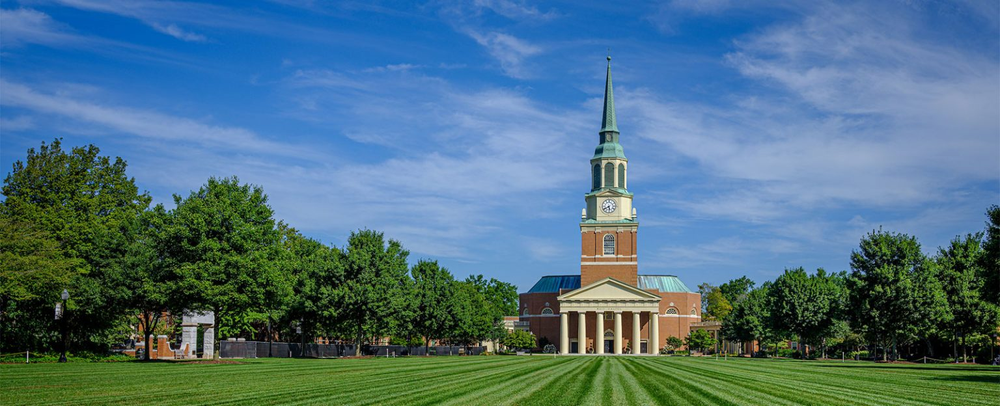
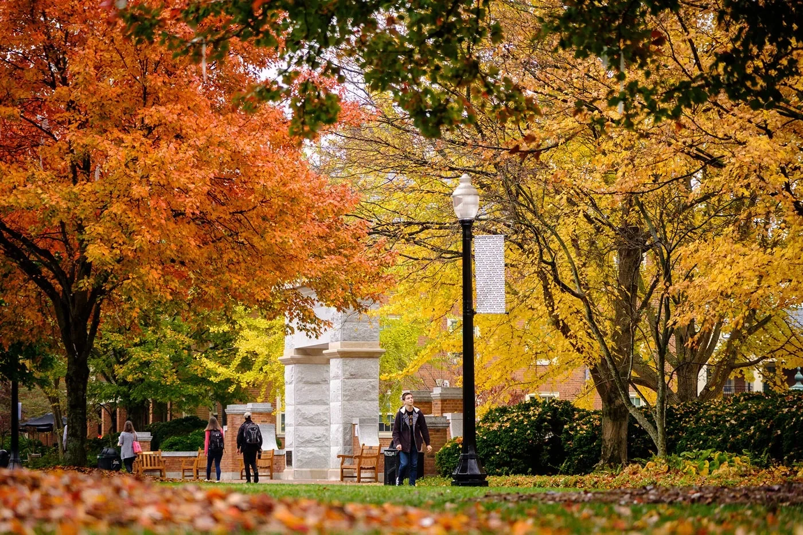
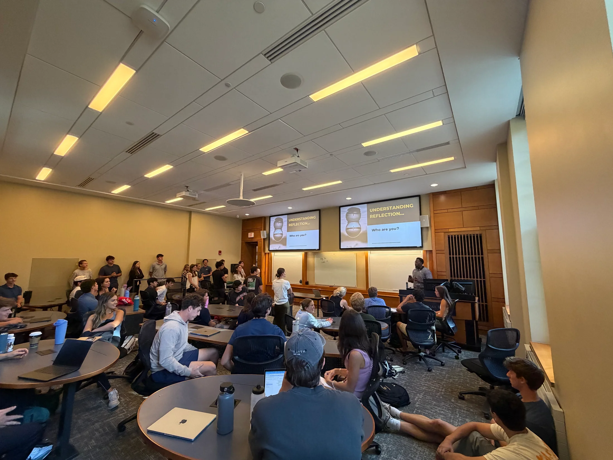
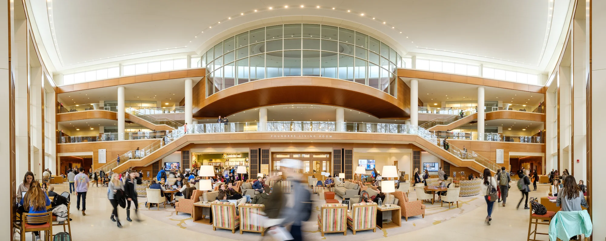

Wake Forest University Winston-Salem, NC
Student consulting.
Rooted at Wake Forest.
We bring Wake Forest students together for case preparation, alumni connections, and pro bono work in our community.
Get to know DCC
What brings us together
How we learn
consulting.
Practice with other Deacs.
Work through cases, prepare for interviews, and learn to explain your thinking.
Take on a real question.
Bring research and analysis to pro bono projects for local organizations.
Get to know the community.
Find your peers, learn from Wake alumni, and hear from practicing consultants.


Inside the club
Start with
a conversation.
You don’t need a business major or a polished case framework to walk into a DCC meeting. General membership is open to every Wake Forest major and class year.
Come with a question. Find a practice partner. Get to know the people behind the work.
Join the clubOur work
Pro Humanitate,
put into practice.
Student teams working on questions that matter to local organizations.
Our pro bono work connects the consulting skills we practice with the needs of nonprofits and small businesses in Winston-Salem. Projects bring together research, analysis, and a final presentation to the client.
How we work
On the calendar
Meet us
at Farrell.
Fall 2026 at DCC
Case practice, alumni conversations, and project presentations.
Deacon Consulting Club
Get involved with DCC.
Explore consulting with fellow Deacs, or bring a new perspective to the club.